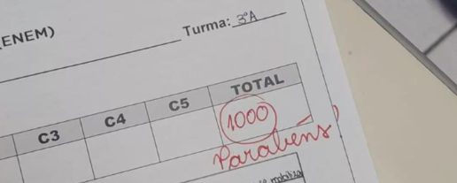

Visão Geral da Disciplina
O Laboratório de Redação do CETI Job de Macêdo Brito trabalha com foco cirúrgico na estrutura dissertativo-argumentativa do ENEM. Os alunos aprendem técnicas avançadas de coesão, coerência, estruturação de propostas de intervenção viáveis e repertório sociocultural variado, contando com oficinas periódicas de correção de textos.
Plano de Estudo Acadêmico
- Estrutura do Parágrafo de Introdução e Tese Central
- Uso de Repertórios Filosóficos, Históricos e Socioculturais
- Conectivos Interparágrafos e Coesão Gramatical Avançada
- Elaboração da Proposta de Intervenção com os 5 Elementos
Galeria de Atividades Práticas

Oficina de Correção e Debate Temático